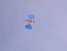
Les cervolistes ne sont pas en retard, Loïk a déjà mis en l'air sa balise, qui volera tous les jours...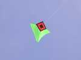
Et Sylvien fait un des premiers vols de son Jessy de 2 m, version simplifiée de Jessica. Vol sans problèmes !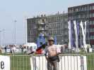
Mikael Alvarez est là comme d'hab, avec son chapeau et ses lunettes...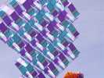
Et toujours des CVs multi-cellulaires étonnants !...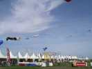
Les 37 stands des délégations sont montés, avec un petit couloir devant pour permettre la circulation même s'il pleut... On n'en aura pas besoin cette année !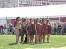
Tout le festival sera marqué par leurs danses et leurs hakas, répétés journellement, mais toujours différents et toujours prenants par l'énergie qu'ils y mettent...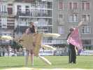
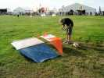
Christian a encore construit un nouveau porteur pour la photo (faut dire qu'il en perd beaucoup aussi !). Celui-ci est un Dopéro, modifié Bécot par deux quilles obliques à l'arrière... Il est encore bien trop instable pour lui confier une nacelle, mais il s'améliorera dans la semaine...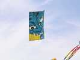
Un beau Edo japonais, démon plutôt que samouraï !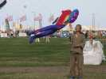
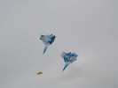
Michel Gressier se lance dans la bagarre avec ses doubles-squares jumeaux !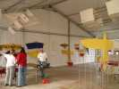
Dans les tentes, expo de CVs anciens. Beaucoup de Rollos de Steiff, de CVs de Gomez, plusieurs Gibson-Girls, et un allemand très communicatif, Christian Kolz, qui supervise le total et a ramené ses bouquins anciens (Lecornu...) déjà présentés à Meudon.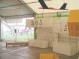
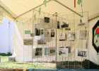
Au stand CVCF, d'une surface doublée cette année, expo relative à l'aérophoto. Photos anciennes, photos récentes, et concours jugé par le public qui vote !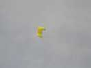
Peter Lynn fait voler une voile de para... en monofil !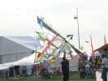
Jacques a sorti son annarlequin qui ne volera guère aujourd'hui, cause vent faible, mais se rattrapera plus tard. Malheureusement, Annaelle n'est, elle, pas venue, triste !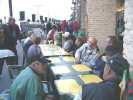
Le soir, les restaurants sont pleins. On dispose des tables jusque sur le trottoir au bord du rond-point du port !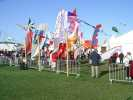
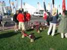
Nos amis suisses ont amené des tonnes de cloches, mais à l'arrêt, il vaut mieux les poser !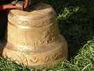
Ce sont des oeuvres d'art, moulées puis reciselées !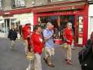
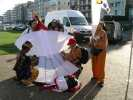
On prépare le petit Jang-Yang pour le défilé, robe blanche immaculée. Mais plus tard, le grand volera aussi, magnifiquement...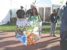
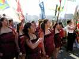
Pendant la parade, tenue folklorique et à chaque arrêt, chant, danse ou haka maori...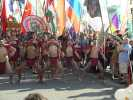
Mais les hommes viennent aussi devant pour impressionner l'adversaire !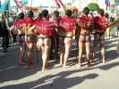
Côté pile, les hommes sont aussi impressionnants et "tatoués"...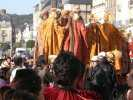
Au passage, on s'enrichit d'un groupe d'échassiers avec tambours, aux costumes splendides...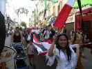
Et le Jang-Yang a déroulé sa longue traîne (partiellement, sinon on embouteillait tout Dieppe) !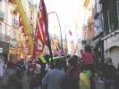
Toutes les bannières s'agitent pour montrer aux dieppois que le festival n'est pas seulement sur les pelouses...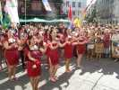
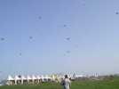
Au retour, déjeuner, puis on commence à monter des tas de trucs, des CVs, des trains...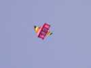
...un grand Météo, très coloré (de Bernard ?), qui faseye de partout dans ce petit temps !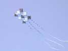
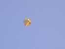 | 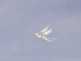 | 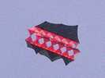 | 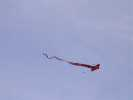 |
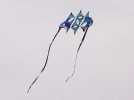 | 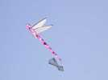 | 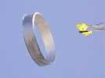 | 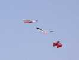 |
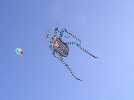
Et, joie, des CVs dont vous connaissez bien l'auteur, j'espère ! Un grand coléoptère...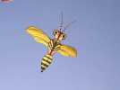
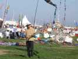
C'est Georges Peters, bien sûr, qui est venu à Dieppe comme la dernière fois.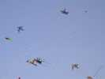
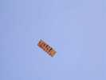 | 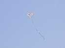 | 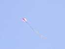 | 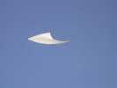 |
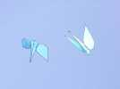 |